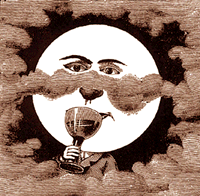

| The Televisionary Oracle Newsletter This Month's Special: Every Day's a Holiday | |
|

Millions thank their parents for childhood swimming lessons!
Deluge results in excellent hydroponic tomatoes! One might think that these headlines are true after reading the September issue of the Televisonary Oracle Newsletter, because it's loaded with predictions for the End of Life As We Know It, references to children and swimming, and a yowsa amount of California stories. All that, plus our editor broke a steel-embossed journalistic rule and wrote most of her contributions on an outrageously empty stomach, leading to the creation of possibly more food copy than a library of Gourmet magazines' anniversary issues. Unsure of how all this happened, we've hit upon the lie that we're simply tailoring to our audience: so if you're an apocalyptically-inclined, hungry, aquatically adept former child with the bent of the Calif-phile, snuggle right up. For the rest of you, well--if you like Rob's poetry, good essays, tree huggers, weird shit, bad dreams, menstrual rants, fake news, nudie nun photos, and screaming like hell into the telephone, read on. We're keeping the Pretty Darned Good-Looking Corpse up for an extra month because it's too much fun to quit now. Crack some brain-eggs and keep the story going. And don't forget that this baby is hyperlinked up one side and down the other. Write in at length and often, telling us what you think, like, fear, love, eat, miss, made up, lie about, wish would happen, or dream. 'Tis the very nectarous sea upon which we richly drift.
--Gaudy Gargoyle
Table of Contents
Future Shock
Hype-Ocalypse Now!
Mightier Than the Sword
'Net Ball
Letter From Yerp
Pretty Darned Good-Looking Corpse
Food Frenzy
Menstrual Madness
Broken Hearts Club
Mercury's Mess
It's A Date
Missed the news from our letter? Frittered away your summer actually spending time outdoors away from the computer? For shame! But worry not. We've cleverly archived past issues for just such an indelible emergency. Catch yerself up.
Surf the Boulevards network
to other great alternative
content sites.
|